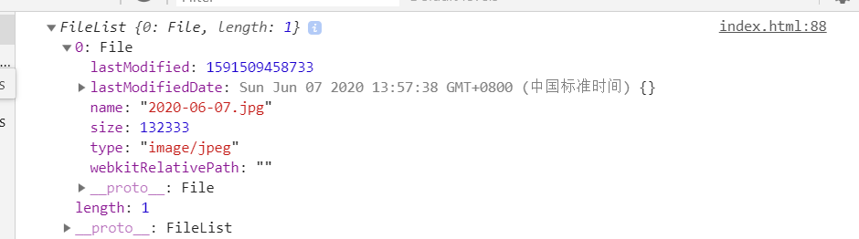

最近发现了一个可以利用canvas压缩图片的方法，于是乎我就自己尝试了一下，发现效果还是不错的，可以控制压缩的输出格式，还有压缩比例。为什么会发现这个东西呢，因为我最近研究东西的时候突然想到一个需求，那就是我们前端能不能在上传图片之前压缩一下图片，于是乎就有一系列的操作了。原理呢就是利用了canvas的api以及浏览器提供的FileReader和Image的两个对象。老规矩，先把歌安排上。
既然是图片压缩无可避免的就是对格式以及文件大小的限制，看下面代码:
const ACCEPT = ['image/jpg', 'image/png', 'image/jpeg'] // 格式判断数组
const MAXSIZE = 3 * 1024 * 1024 // 限制文件大小，这里是3MB既然是上传的时候对文件的压缩，那么就少不了下面的代码了：
<input type="file" id="upload">那么我们现在要做的就是去获取文件，对文件的类型以及大小做出判断。如何获取文件？看下面代码：
const upload = document.getElementById('upload')
upload.addEventListener('change', function (e) {
//console.log(e.target.files);
const [file] = e.target.files //获取文件
// 如果没有文件我们就直接返回
if (!file) {
return
}
// 对属性重命名
const { type: fileType, size: fileSize } = file
// 判断文件类型
if (!ACCEPT.includes(fileType)) {
alert(`不支持[ ${fileTypez} ]文件类型!`)
upload.value = ''
return
}
// 判断文件大小
if (fileSize > MAXSIZE) {
alert(`文件超出 ${MAXSIZE_STR}`)
upload.value = ''
return
}
})放开console.log(e.target.file)可以看看浏览器是输出什么内容

我们运用了ES6里面的数组结构方法，获取到了file文件，并对里面的属性进行了重新命名(注意，重新命名之后原来名字就找不到了)，重新命名主要是为了代码的可读性。毕竟直接写他原本的属性判断，我估计没几个人可以一眼看代码就知道怎么回事的。
但是这里只是对文件的大小以及格式的判断，我们需要将图片转成Base64的格式。
// 将图片转成Base64的格式
function convertImageToBase64(file, callback) {
let reader = new FileReader()
reader.readAsDataURL(file)
reader.addEventListener('load', function (e) {
const base64Image = e.target.result
callback && callback(base64Image)
//回收内存
reader = null
})
}可以看到我们首先利用FileReader将图片转成了Base64，并利用load事件，在图片加载完之后我们就调用了回调函数，同时我们对利用完的FileReader进行了手动的垃圾回收。为了方便你们的理解，我提供了MDN上对web api 中的FileReader的解释。
FileReader 对象允许Web应用程序异步读取存储在用户计算机上的文件（或原始数据缓冲区）的内容，使用 File 或 Blob 对象指定要读取的文件或数据。
其中File对象可以是来自用户在一个input元素上选择文件后返回的FileList对象,也可以来自拖放操作生成的 DataTransfer对象,还可以是来自在一个HTMLCanvasElement上执行mozGetAsFile()方法后返回结果。
重要提示： FileReader仅用于以安全的方式从用户（远程）系统读取文件内容 它不能用于从文件系统中按路径名简单地读取文件。 要在JavaScript中按路径名读取文件，应使用标准Ajax解决方案进行服务器端文件读取，如果读取跨域，则使用CORS权限。
前期工作做的差不多了，我们基本可以进入压缩图片的核心工作了，在这之前有有件重要的事情要干，那就是调用convertImageToBase64函数。
convertImageToBase64(file, compress)其中compress就是我们要实现图片压缩的方法了，可以分成两步实现。先上第一步代码
let maxW = 1024 //压缩的图片宽度
let maxH = 1024 //压缩的图片高度
const image = new Image()
image.src = base64Image
image.addEventListener('load', function (e) {
let radio // 图片压缩比
let needCompress = false //是否需要压缩
if (maxW < image.naturalWidth) {
needCompress = true
radio = image.naturalWidth / maxW
maxH = image.naturalHeight / radio
}
if (maxH < image.naturalHeight) {
needCompress = true
radio = image.naturalHeight / maxH
maxW = image.naturalWidth / radio
}
if (!needCompress) {
maxW = image.naturalWidth
maxH = image.naturalHeight
}
})
document.body.appendChild(image)这里主要是对图片压缩比的计算，而且是要对高度以及宽度的计算，判断是否需要压缩。需要注意的是如果不需要压缩的时候，实际的宽高，就是图片本身的宽高,需要压缩的时候，宽高需要压缩到一样的比例。那么下面我们就可以运用canvas，将图片绘制出来。
const canvas = document.createElement('canvas')
canvas.setAttribute('id', '__compress__)')
canvas.width = maxW
canvas.height = maxH
canvas.style.visibility = 'visible'
document.body.appendChild(canvas)
const ctx = canvas.getContext('2d')
ctx.clearRect(0, 0, maxW, maxH)
ctx.drawImage(image, 0, 0, maxW, maxH)
const compressImage = canvas.toDataURL('image/jpg', 0.9) //控制输出的Base64图片的格式以及压缩率
canvas.remove()至此我们就完成了图片的压缩，这里上完整的compress函数的代码：
function compress(base64Image, callback) {
let maxW = 1024
let maxH = 1024
const image = new Image()
image.src = base64Image
image.addEventListener('load', function (e) {
let radio // 图片压缩比
let needCompress = false //是否需要压缩
if (maxW < image.naturalWidth) {
needCompress = true
radio = image.naturalWidth / maxW
maxH = image.naturalHeight / radio
}
if (maxH < image.naturalHeight) {
needCompress = true
radio = image.naturalHeight / maxH
maxW = image.naturalWidth / radio
}
if (!needCompress) {
maxW = image.naturalWidth
maxH = image.naturalHeight
}
const canvas = document.createElement('canvas')
canvas.setAttribute('id', '__compress__)')
canvas.width = maxW
canvas.height = maxH
canvas.style.visibility = 'hidden'
document.body.appendChild(canvas)
const ctx = canvas.getContext('2d')
ctx.clearRect(0, 0, maxW, maxH)
ctx.drawImage(image, 0, 0, maxW, maxH)
const compressImage = canvas.toDataURL('image/jpg', 0.9)
canvas.remove()
callback && callback(compressImage)
//操作完之后移出image对象
image.remove()
})
document.body.appendChild(image)
}这个函数为什么需要callback呢？因为操作压缩完的图片就可以上传服务器了，这里就可以调用上传到服务器的函数，由于需要给compress传值，所以我们需要对convertImageToBase64的调用做出一点改造
convertImageToBase64(file, (base64Image) => compress(base64Image, uploadToServer))
function uploadToServer(compressImage) {
console.log('upload to server');
}由于偷懒，所以这个上传方法就这样给个示例就好了。至此压缩就此结束。